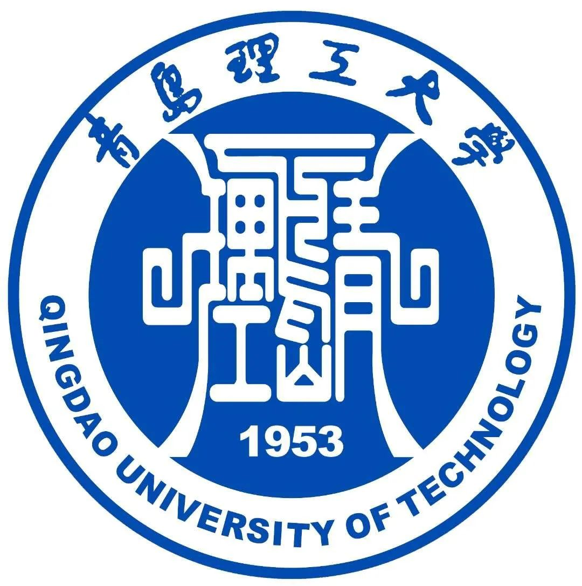

学习坐标
青岛黄海学院
机器人工程本科
—

青岛理工大学
工程管理自考本科
—至今
A PERSONAL INDEX / 持续更新的个人切片
你好，我是侯雪斌，叫我 Bill 就好。
一个做用户运营、也喜欢追问 Why 的业务探索者。

机器人工程专业出身，走进过电商、文旅与教培。从一个人负责的 0 到 1 项目，到用户分层、内容、活动和转化链路，我愿意把自己定义为一个「搞业务的」。
工作里，希望成为懂业务、能扛事、会补位的队友；生活里，愿意倾听，也始终对新事物保持好奇。持续学习，是我理解问题、寻找方法的一种习惯。
我希望自己成为「靠谱、有趣、有温度，能给身边人带来正向价值的人」
机器人工程本科
—

工程管理自考本科
—至今
EXPERIENCE & PRACTICE
从洋葱学园的私域增长，到学家优品的电商实践、新东方文旅的社群搭建，再到浪起的转化提效与荣怀学校的品牌内容，我在不同业务里，逐步拓宽理解问题和推进事情的方式。
这些经历对我而言，是一块块能力拼图：理解用户，把链路跑通，让内容落地，也从结果里继续学习。比起只列出做过什么，我更想讲清楚每一站如何改变了我。
点击右侧经历，查看项目背景、任务、行动与结果。
由近及远 · 经历与代表项目
BUILD & EXPERIMENT
把一闪而过的想法，
做成可以真实体验的东西。
一些小作品，一些新尝试。
选一个分类，看看正在做的事。
THINKING & CREATION
持续记录，慢慢整理。
让零散的表达，长成自己的脉络。
把工作里的判断与生活中的观察，
慢慢整理成值得回看的思考。
OFF THE CLOCK / 生活的另一面
去远方，翻几页书，听一段对话。
让好奇心，有自己的去处。
旅行持续记录，书架与播客收藏慢慢整理。
GET IN TOUCH
关于工作，也关于新的想法。